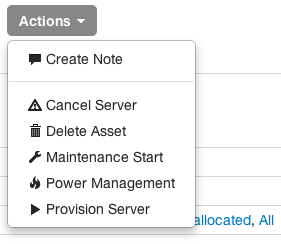
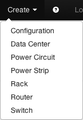

Basics
Collins in 60 seconds
The Collins web UI is very simple, only providing a small subset of the functionality available via the API. This document should be considered a user guide to Collins where a user is someone who provisions machines or occasionally needs to look up asset data. The information here will not be particularly useful for Collins API developers or Collins administrators. This is as close to a walkthrough or tour as you will get.
During the tour we'll walk through the process of provisioning a server, as well as highlight some of the additional functionality available in the web UI. You can mostly just follow the screenshots unless you want additional information.
Heads up! Most actions outside of logging in, searching, or viewing an asset will result in some action being taken. For instance, putting an asset in maintenance may generate a JIRA ticket for the datacenter team. Power cycling a host will cause it to be rebooted, and log the fact that you rebooted it. Be responsible.
Login
Getting into Collins
At Tumblr you will use your LDAP credentials to authenticate to Collins. Your LDAP groups will determine the level of functionality you have available to you in collins. If you are not at Tumblr your administrator may be using flat-files or some other authentication mechanism. See your Collins administrator for login details.
When you first go to collins you will be presented with an interface like the following.
Enter in your account credentials and hit the enter key or click sign-in to authenticate.
Heads up! Authentication is required to do anything in collins. The only functionality available anonymously in Collins is the login page, the help page, and the timestamp API endpoint.
Search
Find the stuff you're looking for, fast
Once you have authenticated to collins you should be presented with a search UI. The elements on the left in this interface are asset attributes (e.g. status, tag, etc) while the elements on the right are tags (e.g. hostname, pool, etc). The search fields on the left are fixed, the search fields on the right can be configured by your collins administrator.
In this interface you can search for assets that match the criteria you specify. Since we're looking for a server to provision, we're going to look for unallocated server nodes. Due to the current collins configuration, you can only provision Unallocated hosts. A sample search results page is below.
The search results page is color coded to reflect the status of the asset. Incomplete and new assets are yellow, provisioning and provisioned assets are blue, cancelled and decommissioned assets are green, and maintenance assets are red. People usually ask why allocated/unallocated assets aren't green. Since allocated and unallocated are the default states, using green resulted in an all green search results page. No color was just better.
Asset Details
Dig into your equipment and configurations
Once you click through from the search results to an asset, you are presented with the details page. The asset details page provides all known asset information to you in an easy to digest format.
Asset Actions
Ways you can break some stuff
The collins web UI tries to expose most of the actions you can take on an asset. Things like host provisioning, maintenance, logging and power management are all available to you. Which actions are available depends on the asset type, the asset status, the collins configuration, and your privileges. For instance, you can not provision an asset that is already allocated. You can not put an asset in maintenance mode that is already in maintenance mode. For the most part application actions are available only when they are applicable.
Note Everything below the divider line in the drop down is a potentially destructive or disruptive action and will be called out as such in the UI.
-

Asset Actions
You can find the available actions for an asset in the actions drop down.
Provisioning
For provisioning purposes you'll want to search for hosts that are unallocated. Do not allocate hosts in any other state.
To provision a host just click the 'Provision Server' link in the actions drop down. You will be presented with a dialog like the following:
Depending on the profile you choose (web, database, etc) you will have a different set of configurable options made available to you. The profile and options you specify will dictate what role in the environment the host will eventually play. If something is optional (such as secondary role in this dialog) and you're unsure, just leave it unspecified.
When you're ready just click the 'Provision Server' button. This takes 30-60 seconds to return. During this process we verify any required settings for the specified host and reboot it onto a reinstall image. Once control is returned to you, the dialog will close and you should notice that the primary role, pool, nodeclass, contact and some other options have been changed to reflect the settings you specified. Also note that the status has changed from Incomplete to Provisioning.
Once the initial provisioning has successfully completed (the remaining steps, such as puppet and func cleanup), you'll see a hipchat notification in the builds room. Once the machine is fully provisioned, the status will change automatically to provisioned. In the near future we'll use the contact tag to again notify you that the machine has finished the provisioning process.
Maintenance
On occasion you will need to put an asset into maintenance. In our environment, once you do that this triggers a few events such as pulling the host out of any upstream proxy configurations or potentially re-generating DNS. This should generally be something performed by people on the operations team, however there may be times when you need a machine that has had some kind of provisioning problem occur go into maintenance so you can reprovision it. In that case, again in the actions drop down, you can just click the start maintenance button to change the status of the machine to maintenance mode. Once in maintenance mode you can reprovision the host if needed. If you're unsure, ask the person listed under the contact tag.
In EWR, putting a host into maintenance mode will cause a JIRA ticket to be generated if the maintenance type you select is HARDWARE_PROBLEM, IPMI_PROBLEM, or NETWORK_PROBLEM so choose a state accordingly.
Cancellation
Cancelling a server will cause it to be handed back to any neccesary hosting providers, and will shred the filesystem data before doing so. This process takes 3-5 days to complete. Server cancellations should generally only be done by people on the SRE or operations teams.
Only assets that are not owned by Tumblr can be cancelled.
Deletion
There are rare occasions, particularly if an asset went through intake with bad data (e.g. the wrong tag), where you may want to actually delete an asset. At Tumblr this can be performed by the datacenter team or Blake. This is an absolutely destructive act and should generally not be done.
If you have appropriate permissions you can delete an asset via the web UI. This option is not available via the API.
Power Management
A variety of power management functions are available in the UI. In fact, some of these are only available in the UI. These allow you to perform actions like soft reboots, hard reboots, powering off a machine, etc. Note that what power actions are available when an asset is allocated is configurable, so some power actions may not be available.
With great power comes great responsibility.
It is also possible to check power status or perform an IPMI identify via the 'IPMI Info' tab.
Log Creation
The logs for an asset are created by both internal and external processes. There is an API available for creating new log entries and querying existing ones, but log entries are immutable and permanent, there is no delete support, even once an asset is decommissioned. These logs give you a permanent historical view of lifecycle related events such as provisions and cancellations as well as changes in tag values.
Although in the UI you will see a few entries that say "User unknown", the user account record is actually stored and this is a UI bug. By design, no changes or updates to an asset can happen without leaving some kind of an audit trail.
The create a note web UI action allows you to create a log entry for an asset.
Activation
If an activation plugin has been configured you will be able to provision virtual assets. These hosts will have a status of Incomplete. Activation will move the host into New until it is ready for use. The UI for this is nearly identical to provisioning because the provisioning process will run once the host is available.
-

Asset Activation
The asset activation drop down item
Admin
Administrative functionality
There are a few features that are for admins only. You have to be in a configured admin group in order to see or use them.
Logs
If you are an administrator you should find a link named 'Logging'. This will show you an up to date view of all logged activity in the system. Clicking the auto refresh button will cause the UI to refresh periodically and display any new log entries.
Stats
There is no link to this page but if you are an administrator you can get to it at
/admin/stats This will show you various stat information and also allow
you to clear the cache. The clear cache button only exists in case you manually modify
something in the DB and want the cache to refresh.
This page displays the server start time, API and web stats for requests and latency, authentication related statistics, and cache statistics.
Create
It is possible as an adminstrator to create assets (not servers) from the web UI. Really this is pretty much only useful for configuration assets, but the functionality is there.
The creation interface requires that you specify a tag, whether IPMI information should be generated or not, and the asset status. It is not possible to specify any additional information via this interface.
-

Asset Create
You can find the list of asset types that can be created in the create drop down